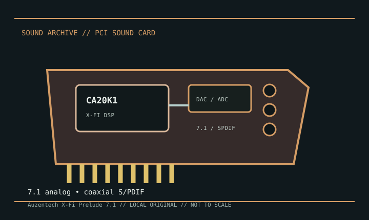

[ INDIVIDUAL MODEL // SOUND HARDWARE ]
Auzentech X-Fi Prelude 7.1
Auzentech’s X-Fi Prelude combines Creative’s X-Fi processing with Auzentech-selected analog components and a conventional PCI interface. Treat it as a distinct board, not merely another Sound Blaster X-Fi SKU; original drivers and its manual identify the correct connections.

Detailed specifications
| Exact model / scope | Auzentech X-Fi Prelude 7.1 PCI card. Do not conflate it with the later X-Fi Forte PCIe card or Creative-branded X-Fi boards. |
|---|---|
| Bus / host | Conventional PCI host interface. Modern motherboards may omit PCI; a physical adapter does not guarantee driver or interrupt compatibility. |
| Audio processor / conversion | Creative CA20K1 X-Fi audio processor with board-specific AKM conversion components. Manufacturer-era documentation lists high-resolution stereo and multichannel playback; use the manual for mode-specific rates rather than assuming all 7.1 channels operate at the stereo maximum. |
| Analog / digital I/O | Seven-point-one analog outputs via rear 3.5 mm jacks, plus model-specific digital S/PDIF connections. Board headers and digital adapters vary by package; consult the Prelude manual before wiring external modules. |
| Features / expansion | X-Fi effects and ASIO modes are driver-dependent. Some descriptions refer to swappable front-channel op-amps; inspect the exact board and manual rather than assuming every revision/accessory bundle is identical. |
| Drivers / operating systems | Auzentech issued legacy Windows driver packages for the Prelude, principally its contemporary XP/Vista generations. Later Windows setups may rely on community support packs and are not guaranteed official compatibility. |
Compatibility & preservation
Keep the Auzentech driver package and exact manual with the card. Photograph the bracket, digital ports, component markings, and any removable op-amps or accessories; verify legacy driver behavior before replacing a working system.
- Photograph the model marking, PCB revision, and all included brackets or cables before service.
- Save the matching driver, manual, and working host configuration; bus fit alone does not establish driver compatibility.
- Use the manufacturer’s model-specific pinout and routing diagram before connecting line, microphone, digital, or multichannel outputs.
Sources & documentation
- Internet Archive — Auzentech X-Fi Prelude manual searchArchive catalog search for the original model manual and installation documentation.
- Xenodyne — X-Fi Prelude driver compatibility notesCommunity installation report documenting a later Windows driver setup; it is not a manufacturer compatibility guarantee.